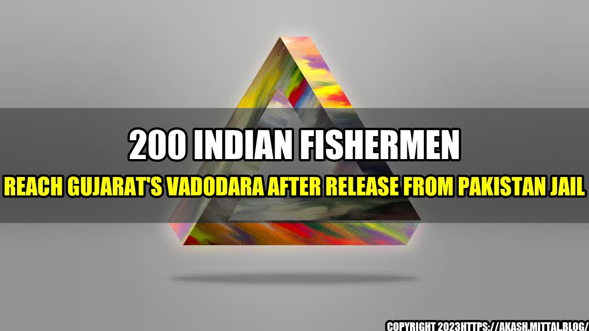

200 Indian Fishermen Reach Gujarat's Vadodara After Release From Pakistan Jail

The release of 200 Indian fishermen from a Pakistani jail has brought cheers to their families and the fishing community in Gujarat's Vadodara. Let's take a closer look at their case, and the larger issues it reflects.
The Fishermen's Story
For over a year, 200 Indian fishermen were jailed in Pakistan for fishing in the country's territorial waters. Many of them were arrested because of a lack of technology to determine their exact location in the sea. Despite various efforts by the Indian government and NGOs, their release was delayed due to bureaucratic hurdles and political tensions between the two countries. Finally, after 13 months, they were released and brought back to India.
The fishermen were welcomed with open arms by their families and the local fishing community. They talked about the hardships they had to face in the Pakistani jail and how they missed their loved ones. Despite their ordeal, they were happy to be back home and eager to get back to their profession.
The Larger Issues
1. Lack of Technology
The fishermen's case highlights the lack of technology and equipment in the fishing industry, which makes it difficult for fishermen to determine their exact location in the sea. This often leads to them accidentally crossing international waters and getting arrested by neighboring countries. The Indian government needs to invest in modern technology and educate fishermen about the dangers of fishing in prohibited waters.
2. Diplomatic Tensions
The case also reflects the ongoing diplomatic tensions between India and Pakistan, which have often resulted in the arrest and detention of fishermen from both countries. While the release of these fishermen is a positive step towards improving relations between the two countries, there is a need for a permanent solution to the issue of fishermen getting arrested and jailed due to political tensions.
3. Livelihoods of Fishermen
Lastly, the case highlights the importance of the fishing industry for the livelihoods of millions of fishermen and their families. Fishing is a dangerous profession, and fishermen often risk their lives to earn a living. The government needs to ensure the safety and well-being of fishermen and provide them with better opportunities and infrastructure to improve their livelihoods.
Conclusion
The release of 200 Indian fishermen from a Pakistani jail is a positive development, and it reflects the efforts of various stakeholders to secure their release. However, the case also highlights the larger issues of technology, diplomatic tensions, and livelihoods that need to be addressed to improve the fishing industry and the lives of fishermen. As a society, we need to recognize the contributions of fishermen to our economy and well-being and provide them with the support and resources they need to thrive. Only then can we ensure a sustainable and prosperous future for the fishing industry and its communities.
Curated by Team Akash.Mittal.Blog
Share on Twitter Share on LinkedIn